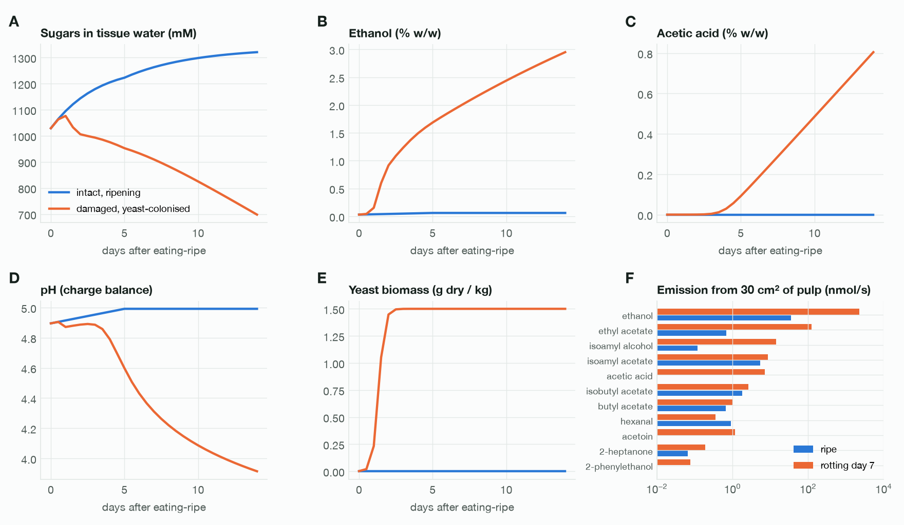
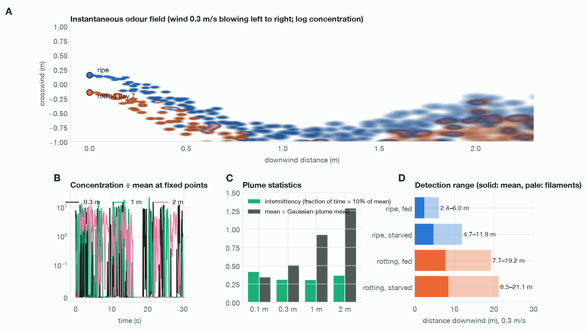
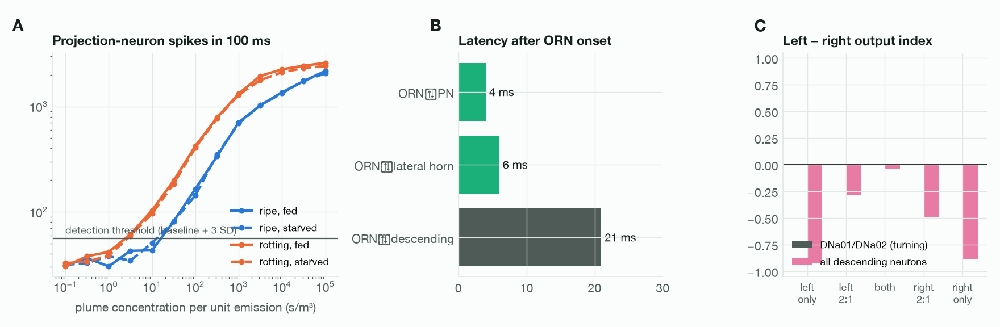
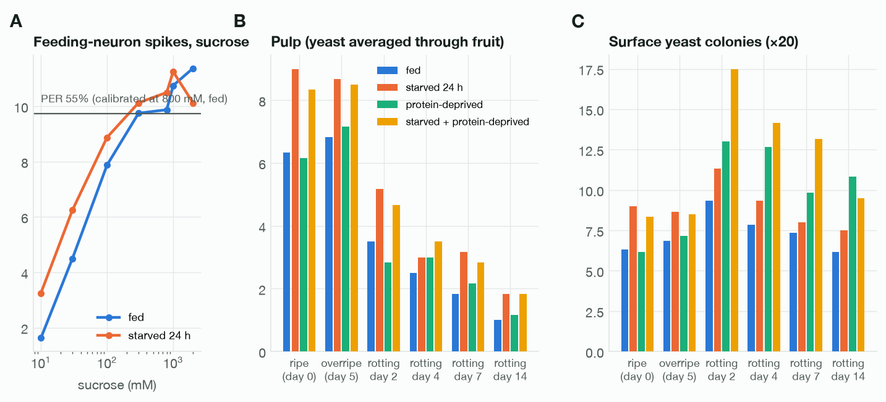
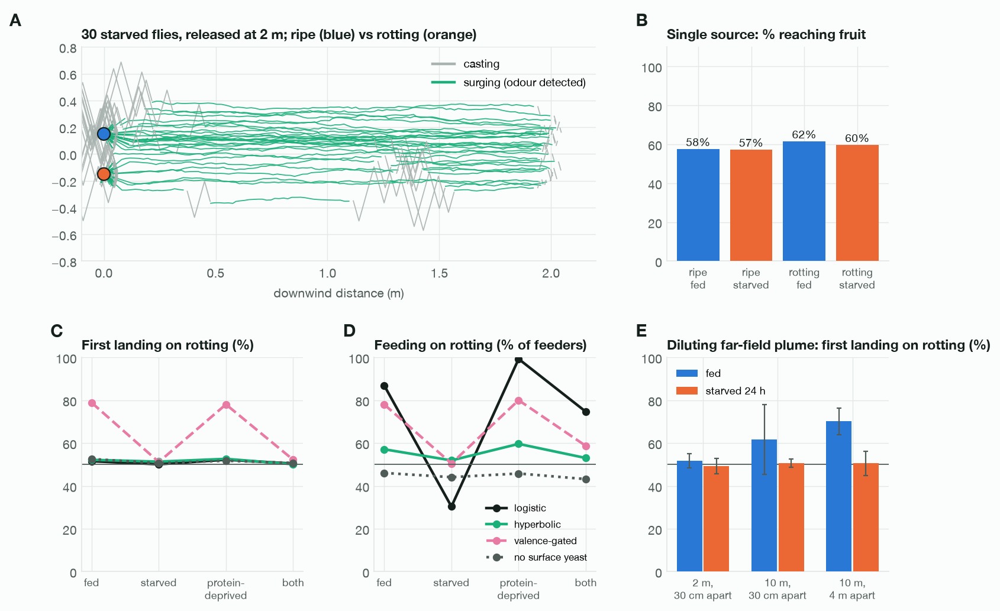

PDFCode and data: github.com/charbelkassab/ripe-or-rottingProject: charbelk.com/ripe-or-rotting
A connectome-constrained simulation of Drosophila melanogaster foraging, from fermentation chemistry and odour plume physics to receptor transduction, whole-nervous-system activity and flight.
Fruit flies are famously drawn to fermenting fruit, but it is unclear whether that preference reflects a stronger odour, a better taste, or the fly's internal state. We built an end-to-end simulation that computes banana composition over 14 days from ripening and yeast fermentation kinetics, the emission and turbulent transport of eleven volatiles and CO₂, receptor responses from measured odorant–receptor and taste data, and the resulting activity of the full male central nervous system connectome (MaleCNS v1.0; 165,122 neurons) in four internal states. Flies then searched a turbulent plume with a surge-and-cast flight rule and decided whether to feed from the brain's taste response.
Fermentation lowered the brain's odour detection threshold about tenfold and extended detection range roughly threefold (about 8–19 m vs 2–6 m in a 0.3 m/s breeze). Starvation doubled the range for ripe banana, so from 10 m fed flies landed first on rotting fruit (62–70%) while starved flies chose evenly. Within a few metres, smell intensity did not decide which fruit was reached. On contact, rotting pulp was less acceptable than ripe pulp, but surface yeast reversed this, most strongly in protein-deprived flies. The model reproduced four of nine behavioural and physiological checks; it failed to predict odour valence, lateralised steering and the effect of hunger on upwind flight.
Wild Drosophila melanogaster feed and breed on fermenting fruit. Yeast-colonised substrates attract more flies than sterile fruit1, fermentation volatiles such as ethanol, acetic acid and 2-phenylethanol act together as attractants2, and yeast is the fly's main source of protein3. Three explanations for the preference are usually conflated: fermenting fruit is louder (it emits more volatiles), it tastes better (yeast and its products are appetitive), or the fly's need (energy vs protein) changes how both are valued4,5.
A connectome now exists for the entire adult male central nervous system6, and leaky integrate-and-fire (LIF) models of fly connectomes can predict sensorimotor circuit activity7. We asked whether a simulation that starts from the chemistry of real fruit, rather than from abstract "sweet" or "yeasty" stimuli, can separate these explanations, and where such a model breaks.
The simulation is a chain of six stages, each driven by measured parameters wherever they exist. Parameters without direct measurements are flagged as estimates in the source files and in the text below.
Pulp starts at eating-ripe composition (Cavendish: starch 25.2, sucrose 45.6, glucose 53.3, fructose 62.3 g/kg; water 753 g/kg)8. Starch hydrolysis and invertase continue ripening in both scenarios. In the damaged scenario, yeast (10⁵ CFU/g inoculum; μmax 0.22 h⁻¹ at 25 °C, Ks 0.1 g/L, Yx/s 0.10)9 converts hexose to ethanol and CO₂ (0.46 g ethanol per g sugar). Acetic acid bacteria oxidise ethanol at the surface (53% of theoretical yield, as measured for banana vinegar). By-products (ethyl acetate, acetoin, 2-phenylethanol, isoamyl alcohol, glycerol) use wine-fermentation yields. pH comes from a weak-acid charge balance on malic, citric and acetic acid and dissolved CO₂, calibrated to pH 4.9 for ripe pulp. Fruit-made esters and aldehydes are interpolated between ripe and overripe estimates. Biological rates scale with Q₁₀ = 2.
Each volatile leaves 30 cm² of exposed pulp (an estimate for a split banana) at J = (D/δ)·A·Kaw(T)·Caq, using measured air diffusion coefficients and Henry's-law constants with their temperature dependence10,11; only undissociated acetic acid partitions to air. CO₂ combines fruit respiration (200 µL/min)12 with fermentation (272 mL per g sugar).
Transport uses a filament model13: 25 puffs/s per source, a spatially uniform crosswind meander (Ornstein–Uhlenbeck, s.d. 0.5 U, τ 2 s), per-puff eddy velocities (s.d. 0.33 U, τ 0.2 s) and linear puff growth. Parameters were chosen so that, 0.1–2 m downwind, intermittency is 0.30–0.41, 95th-percentile concentration is 5.5–7× the mean, and the mean is within a factor of three of a Gaussian plume (σ = 0.1 r). Beyond 2 m this plume stays up to 3× more concentrated than the Gaussian estimate, so far-field experiments were repeated with faster puff growth that dilutes as expected.
Olfactory receptor responses are DoOR 2.0 consensus values14 (spontaneous rate subtracted) scaled to a 290 spikes/s maximum15, with a population Hill slope of 0.816 around the concentration used in the underlying recordings. Receptors map to connectome ORN types through their glomeruli (VC3/VC5/VM6 renaming applied). CO₂ drives the V glomerulus above a ~1,000 ppm excess. Spontaneous ORN firing is 8 spikes/s.
Taste neuron identities in the male connectome were assigned by matching each labellar type's downstream connectivity to FlyWire neurons of known modality7,17 (cosine similarity 0.83–0.94): LB3b–d sugar, LB3a water, LB1a–d bitter, LB1e Ir94e, dorsal taste pegs amino acid/yeast, claw taste pegs carbonation18. Sugar neurons follow a sucrose Hill curve (EC₅₀ 60 mM, max 94 spikes/s) with weaker glucose and fructose responses; water neurons are silenced by osmolality; bitter neurons respond to tannins and K⁺ (thresholded), ethanol and acidity; yeast-peg neurons respond to yeast (EC₅₀ 2% w/v, estimate)5,19. Bitter input suppresses sugar-neuron output, sugar / (1 + bitter / 15 Hz), standing in for presynaptic GABA-B inhibition, which a point-neuron connectome model cannot represent20.
The 165,122 traced neurons and 25.6 M connections of MaleCNS v1.06 were simulated as identical LIF units7 (1 ms step, 2 ms delay, synapse sign from predicted transmitter). With published parameters this dataset locks into self-sustaining activity, so we applied: spike-frequency adaptation; synapse gain 0.2 mV per contact; inhibition ×3 (a stand-in for slow GABA-B); no fast synaptic action for dopamine, serotonin or octopamine; no Kenyon cell–Kenyon cell contacts; and sensory neurons treated as pure inputs. Odour responses were still identical for every receptor class (projection-neuron pattern correlation 0.98), because 30 cholinergic antennal-lobe local neurons (lLN1_bc) formed a recurrent loop. Reducing cholinergic local-neuron chemical output tenfold, since these cells act largely through gap junctions21, made odour patterns distinct (correlation 0.00).
Four states combine literature gains at the periphery with tonic drive (15 Hz) to the connectome's own state neurons. Fed: drive to insulin-producing cells and Hugin neurons. Starved 24 h: sugar-neuron sensitivity ×2 and bitter ×0.622; DM1 ORN output ×1.75, DM2/DM4 ×1.3, VM2/VA3 ×0.823; DM5 ×0.2524; drive to NPF neurons. Protein-deprived: yeast taste-peg gain ×1.5 (estimate after ref. 5). Both: the union. Hunger was first implemented as an output gain; that failed the held-out feeding test (Section 4), so sugar and bitter gains now scale effective concentration (sensitivity).
Feeding. Acceptance is the spike count over 400 ms in the proboscis motor neuron MN9, the feeding neuron Fdg, G2N-1 and the sugar-responsive second-order neurons7,25; aversion is the spike count in MDN and Bitter-SEL. The feeding probability on landing was calibrated so that fed flies accept 800 mM sucrose 55% of the time22. Because model acceptance saturates above ~300 mM, this logistic is steep; a saturating alternative, p = A / (A + A₈₀₀), is reported alongside it.
Odour detection. For each food and state, the whole brain was run for 100 ms at 13 plume concentrations (four repeats), and a detection was scored when projection-neuron spikes exceeded the no-odour baseline by three standard deviations. The navigation model looks up this detection probability at each fly's instantaneous plume concentration every 50 ms.
Flight. Flies surge upwind 190 ± 75 ms after a detection and cast crosswind 450 ± 165 ms after losing the odour26, with widening reversals. Within 15 cm a surging fly flies to the visible fruit (odour-gated visual attraction)27. Flies that reject a fruit take off and ignore it for 5 s. These rules come from behaviour, not from the connectome, because the model did not steer (Section 3.3). An optional valence gate lets flies surge only if the evoked projection-neuron pattern is net attractive under literature glomerular valence28,29, counting CO₂ as attractive in flight30.
Two fruits sat 30 cm apart, 0.3 m/s wind, 25 °C, with 120 flies released 2 m downwind per run. Each of eight plume realisations was run in both fruit orientations, because a single realisation's meander can favour one side for tens of seconds (a same-fruit control split 66/34 before this correction and 50/50 after it). The spread across realisations is reported as s.d. Additional runs varied release distance (1–15 m), fruit separation (0.3–4 m), wind (0.15–0.6 m/s) and temperature (18–32 °C).
Intact fruit kept ripening: sugars rose from 1,029 to ~1,320 mM in tissue water and pH stayed at 4.9. Seven days after colonisation, damaged fruit held 2.0% ethanol, 0.25% acetic acid, 1.5 g/kg dry yeast and 94 mg/kg ethyl acetate, with sugars down to 909 mM and pH 4.31. By 14 days it reached 3.0% ethanol and 0.8% acetic acid, within the 1–4.5% ethanol measured in naturally fermenting fruit31. Emission changed far more than composition: ethyl acetate rose ~180× (0.68 to 123 nmol/s) and ethanol ~64× (35 to 2,270 nmol/s), while the fruit's own esters changed less than twofold. Warmth amplified fermentation: at day 7, ethyl acetate emission was 54, 123 and 279 nmol/s at 18, 25 and 32 °C.

At any point in the plume, odour was absent most of the time and arrived as brief filaments up to 16–24× the mean (Fig. 3A–C). Within 2.8 m the brain detected either fruit with similar probability, because filaments exceeded both detection thresholds; intermittency, not concentration, limited detection at close range.

Projection-neuron responses rose smoothly with concentration (Fig. 4A). The 50% detection threshold was 17.8 s/m³ for ripe banana and 1.78 s/m³ for rotting banana in fed flies, a tenfold difference driven by ethyl acetate, isoamyl alcohol and the esters of fermentation. Starvation lowered the ripe threshold fourfold (to 4.6 s/m³), mainly through DM1 and DM2 facilitation, and barely changed the rotting threshold (1.47 s/m³). Warmth lowered thresholds through faster fermentation and higher volatility (rotting: 5.6, 1.8 and 1.0 s/m³ at 18, 25 and 32 °C).
Activity reached projection neurons 4 ms, lateral horn neurons 6 ms and descending neurons 21 ms after ORN spiking began. Odour on one antenna did not lateralise output: the turning neurons DNa01/DNa02 stayed silent, and descending output was right-dominant whichever side was stimulated (index −0.88 to −0.93; Fig. 4C). This reflects the uneven side annotation of ORNs (1,343 right, 883 left, 409 unassigned) as much as any circuit property, and it is why the flight rule uses behavioural parameters instead of brain steering.

Combining thresholds with plume dilution (Fig. 3D), a fed fly downwind of ripe banana first detected it 2.4 m (mean plume) to 6.0 m (filaments) away; for rotting banana the range was 7.7–19.2 m. Starvation extended the ripe range to 4.7–11.9 m. The rotting range grew from 4.3–10.8 m at 18 °C to 10.3–25.6 m at 32 °C. In a 1 m/s wind every range roughly halved.
Ripe pulp drove sugar neurons at 57 spikes/s with little bitter input (5.8). Rotting pulp at day 7 drove them at only 27, because of less sugar, acid suppression and 24 spikes/s of bitter input from acidity and ethanol. Averaged through the fruit, rotting pulp was 2–4× less acceptable than ripe pulp in every state (Table 1). Where yeast grows on the surface (×20 local yeast, an estimate), taste pegs fired at 55 spikes/s and rotting fruit became as acceptable as ripe for fed and starved flies, and clearly more acceptable for protein-deprived flies (9.8 vs 6.2 spikes; 13.2 vs 8.3 when also starved).
| Food | Fed | Starved 24 h | Protein-deprived | Both |
|---|---|---|---|---|
| Ripe, day 0 | 6.3 | 9.0 | 6.2 | 8.3 |
| Overripe, day 5 | 6.8 | 8.7 | 7.2 | 8.5 |
| Rotting day 2, pulp | 3.5 | 5.2 | 2.8 | 4.7 |
| Rotting day 7, pulp | 1.8 | 3.2 | 2.2 | 2.8 |
| Rotting day 2, surface yeast | 9.3 | 11.3 | 13.0 | 17.5 |
| Rotting day 7, surface yeast | 7.3 | 8.0 | 9.8 | 13.2 |
| Rotting day 14, surface yeast | 6.2 | 7.5 | 10.8 | 9.5 |

With a single fruit, 57–62% of flies landed within 90 s regardless of food or state, but feeding depended strongly on both: 0.5% of fed and 31% of starved flies fed on ripe banana, and 6% of fed and 14% of starved flies on rotting banana. In the two-choice arena, first landings split evenly (50–53% on rotting, s.d. across plumes 3–5%) in every state, at every release distance from 1 to 15 m in the baseline plume, at all three wind speeds and at all three temperatures.
Feeding did not split evenly. With surface yeast, protein-deprived flies fed mostly on rotting fruit (99% under the calibrated decision rule, 60% under the saturating rule), while sugar-starved flies were the least drawn to it (30% and 52%). Without surface yeast, all four states fed mostly on ripe fruit under both rules (43–46% rotting under the saturating rule; almost no rotting feeding under the calibrated rule). With the valence gate, fed and protein-deprived flies landed on rotting fruit first 78–80% of the time, but 27–28% never landed: under the literature valence code, ripe-banana odour scores as aversive at every concentration for non-starved flies, whereas dilute rotting-banana odour scores as attractive.

Because the baseline plume stays too concentrated beyond 2 m, the long-range experiment was repeated with a plume that dilutes as expected (Fig. 6E). Released 2 m away, fed and starved flies still split evenly. Released 10 m away, beyond a fed fly's range for ripe banana, fed flies landed first on rotting fruit 62% (fruits 30 cm apart) and 70% (4 m apart) of the time. Starved flies, whose ripe-banana range extends past 10 m, split evenly (51%). This state effect appears only under the diluting plume, so its size depends on far-field turbulence, which we did not measure.
Each check compares a model output with an independent measurement or with a property the model must have. Calibration targets are marked as such and are not counted as validation.
| Check | Model | Reference | Result |
|---|---|---|---|
| Feeding neurons rise with sucrose concentration | 1.6 → 11.4 spikes, 10–2,000 mM | Monotonic dose–response22 | pass |
| Starvation increases acceptance | 4.0 → 5.8 at 30 mM | Increased sugar sensitivity22 | pass |
| Half-maximal proboscis extension, starved 1 day (held out) | 238 mM | 300 mM22 | pass |
| Bitter suppresses sugar acceptance | 7.5 → 1.8 | Presynaptic inhibition20 | by construction |
| Distinct odours give distinct projection-neuron patterns | r = 0.98 → 0.00 after fix | Glomerular coding | pass |
| Plume near-field statistics (0.1–2 m) | intermittency 0.30–0.41 | Filament model13 | calibrated; far field too concentrated |
| Odour attraction for 108 odorants (cross-validated) | r = 0.06 | Trap attraction indices28 | fail |
| Unilateral odour lateralises steering output | DNa01/02 silent | Flies turn toward the stronger antenna32 | fail |
| Starvation increases upwind success to a food odour | 60% vs 62% | 62% vs <20%33 | fail |
The odour valence failure is not specific to the brain: a readout trained directly on receptor rates did no better (r = 0.09), so single-concentration receptor profiles alone may not predict trap attraction. The upwind-flight failure shows that hunger's effect on search behaviour is not captured by sensory gains alone.
Read these as predictions of a model that passed four of its nine checks, not as established facts. Each is testable.
Connectome model. Every neuron is the same point unit, synapse strength is synapse count × a constant, and six structural changes were needed to prevent runaway activity. The male connectome cannot represent the mated female, whose yeast appetite is the strongest known3,4. Brain state is reset between decisions; there is no learning or post-ingestive feedback.
Chemistry. Per-compound banana volatile contents, rotting-fruit ethanol and acetic acid trajectories, the 30 cm² exposed area and the ×20 surface yeast enrichment are estimates. Temperature affected smell but not the taste grid, which was computed at 25 °C.
Atmosphere. The plume is two-dimensional at fly height, meander is spatially uniform, and far-field dilution depends on an uncalibrated growth parameter that changes the long-range result.
Behaviour. Steering, surge and cast timing come from wind-tunnel data, not from the connectome. Hunger does not change flight behaviour itself. Bitter–sugar interaction is added outside the connectome, and the two feeding decision rules disagree for sugar-starved flies.